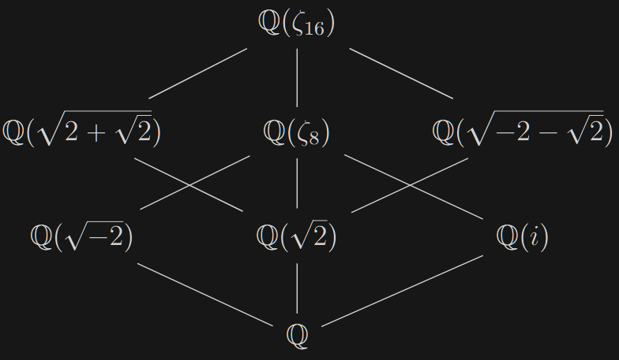

The Mystery of $\tfrac{p^2-1}{8}$
Last summer, I was a counselor at PROMYS. Around the time we were covering quadratic reciprocity, my friend (who was also a counselor) raised an interesting question: is there a good reason why the second supplementary law involves the fraction $\tfrac{p^2-1}{8}$? First, we state the relevant results.
Quadratic Reciprocity: For any pair of odd positive rational primes $p$ and $q$:
- First Supplementary Law: $\left(\tfrac{-1}{p}\right) = (-1)^{(p-1)/2}$
- Second Supplementary Law: $\left(\tfrac{2}{p}\right) = (-1)^{(p^2-1)/8}$
- Reciprocity Law: $\left(\tfrac{p}{q}\right) = \left(\tfrac{q^*}{p}\right)$
where $q^* = \pm q$ is congruent to $1 \bmod 4$, i.e. $q^* = (-1)^{(q-1)/2}q$.
Let us begin by looking at the first supplementary law. It can be rephrased as follows:
$$\left(\frac{-1}{p}\right) = \begin{cases} 1 & \text{if $p \equiv 1 \bmod{4}$} \\ -1 & \text{if $p \equiv 3 \bmod{4}$} \end{cases}$$However, there is a very natural reason to express this result using the fraction $\tfrac{p-1}{2}$.
Proof of the First Supplementary Law: We know that the group $\mathbb{F}_p^{\times}$ is cyclic of order $(p-1)$. Thus, the subgroup of quadratic residues is precisely the kernel of the endomorphism $x \mapsto x^{(p-1)/2}$. Furthermore, the image of this map is $\{\pm 1\}$, so we see that for all $a \in \mathbb{F}_p^{\times}$, we have:
$$\left(\frac{a}{p}\right) = a^{(p-1)/2}$$where the equality is in $\mathbb{F}_p^{\times}$; this is Euler's criterion. In the special case where $a = -1$, we actually have equality in the integers since $(-1)^{(p-1)/2}$ is also valued in $\{\pm 1\}$. $\square$
Now, let us look at the second supplementary law. We can rephrase it as follows:
$$\left(\frac{2}{p}\right) = \begin{cases} 1 & \text{if $p \equiv 1, 7 \bmod{8}$} \\ -1 & \text{if $p \equiv 3, 5 \bmod{8}$} \end{cases}$$One way to prove the second law is through Gauss's lemma. Personally, I do not find this approach to be particularly enlightening. Another standard argument involves looking at the relationship between $\sqrt{2}$ and $\zeta_8$ through the equation $\zeta_8 + \zeta_8^{-1} = \sqrt{2}$.
Proof 1 of the Second Supplementary Law: Look at the field extension $\mathbb{F}_p(\zeta_8)/\mathbb{F}_p$. The quantity $\sqrt{2}$ lies in $\mathbb{F}_p$ if and only if it is fixed by the Frobenius endomorphism. We divide into four cases:
- If $p \equiv 1 \bmod{8}$, then $(\sqrt{2})^p = (\zeta_8 + \zeta_8^{-1})^p = \zeta_8^p + \zeta_8^{-p} = \zeta_8 + \zeta_8^{-1} = \sqrt{2}$.
- If $p \equiv 3 \bmod{8}$, then $(\sqrt{2})^p = \zeta_8^3 + \zeta_8^{-3} = -\sqrt{2}$.
- If $p \equiv 5 \bmod{8}$, then $(\sqrt{2})^p = \zeta_8^5 + \zeta_8^{-5} = -\sqrt{2}$.
- If $p \equiv 7 \bmod{8}$, then $(\sqrt{2})^p = \zeta_8^7 + \zeta_8^{-7} = \sqrt{2}$.
Thus, the second supplementary law holds. $\square$
Let me say a few words about why I like this proof. First, the proof emphasizes the fact that the Legendre symbol is really a question in field theory: saying that $a$ is a quadratic residue modulo $p$ is equivalent to saying that $\sqrt{a}$ lives in $\mathbb{F}_p$, so one should try to study the extension $\mathbb{F}_p(\sqrt{a})/\mathbb{F}_p$ since fields are relatively nice objects.
Okay, that's a lie; field extensions can be tricky. However, that brings me to my second point: cyclotomic extensions are quite nice. We understand them quite well. Furthermore, over finite fields, one can manipulate the fact that the action of the Frobenius endomorphism on roots of unity can be written down explicitly. These ideas can be used to prove quadratic reciprocity and are generally useful in algebraic number theory. For example, this is why number theorists love the Kronecker-Weber Theorem. The same philosophy can be modified appropriately to understand abelian extensions of local fields (Lubin-Tate theory) and imaginary quadratic extensions (CM theory).
Now, let's finally get to the subject of this blog post: why $\tfrac{p^2-1}{8}$? Unlike the quantity $\tfrac{p-1}{2}$, which appears naturally in the proof of the first supplementary law, the quantity $\tfrac{p^2-1}{8}$ doesn't seem to be particularly relevant: it just happens to encode the congruence condition on $p \bmod 8$ that we require. Is there a way to prove the second supplementary law which naturally gives rise to this factor? The answer is yes!
The idea is to once again use cyclotomic extensions, but this time, we are going to look at $\zeta_{16}$ instead. Why would we do this when $\mathbb{F}_p(\zeta_8)$ already contains $\sqrt{2}$? Well, let's go back to our proof of the first supplementary law: we used exponentiation by $\tfrac{p-1}{2}$ to pin down the squares in $\mathbb{F}_p$. In particular, $(-1)^{(p-1)/2}$ calculates if $-1 \in \mathbb{F}_p^{\times 2}$, i.e. whether or not we have $i \in \mathbb{F}_p^{\times}$. Analogously, $(-1)^{(p^2-1)/8}$ calculates if $-1 \in \mathbb{F}_{p^2}^{\times 8}$, i.e. whether or not $\zeta_{16} \in \mathbb{F}_{p^2}^{\times}$. Thus, the second supplementary law can be rephrased as:
$$\text{$\sqrt{2} \in \mathbb{F}_p$} \iff \text{$\zeta_{16} \in \mathbb{F}_{p^2}$}$$Proof 2 of the Second Supplementary Law: We have the following diagram of fields:

We look at the corresponding extensions of residue fields at $p$ by analyzing inertial degrees.
- $(\Rightarrow)$ Assume that $f(\mathbb{Q}(\sqrt{2})/\mathbb{Q}) = 1$. Since $\mathbb{Q}(\zeta_{16})/\mathbb{Q}(\sqrt{2})$ is a composite of quadratic extensions, we have $f(\mathbb{Q}(\zeta_{16})/\mathbb{Q}(\sqrt{2})) \leqslant 2$, so it follows that $f(\mathbb{Q}(\zeta_{16})/\mathbb{Q}) \leqslant 2 \cdot 1 = 2$.
- $(\Leftarrow)$ On the other hand, say that $f(\mathbb{Q}(\zeta_{16}))/f(\mathbb{Q}) = 2$. We see that $f(\mathbb{Q}(\sqrt{2+\sqrt{2}})/\mathbb{Q}) \leqslant 2$. Since this is a cyclic extension, we must have $f(\mathbb{Q}(\sqrt{2})/\mathbb{Q}) = 1$ (otherwise, Galois theory would force the extension to cyclic extension to have full inertia).
We conclude that $\sqrt{2} \in \mathbb{F}_p$ if and only if $\zeta_{16} \in \mathbb{F}_{p^2}$. $\square$
Exercise: Prove the law of quadratic reciprocity as follows:
- Show that the inertial degree of $p$ in the extension $\mathbb{Q}(\zeta_q)/\mathbb{Q}$ is the order of $p$ modulo $q$. (Hint: Frobenius)
- Show that $\mathbb{Q}(\zeta_q)/\mathbb{Q}$ with unique quadratic subextension $\mathbb{Q}(\sqrt{q^*})/\mathbb{Q}$. (Hint: The unique quadratic subextension can only be ramified at the finite prime $q$).
Use the conclusions above to relate the order of $p$ modulo $q$ to the inertial degree of $\mathbb{Q}(\sqrt{q^*})/\mathbb{Q}$ at the prime $p$. Deduce the law of quadratic reciprocity.